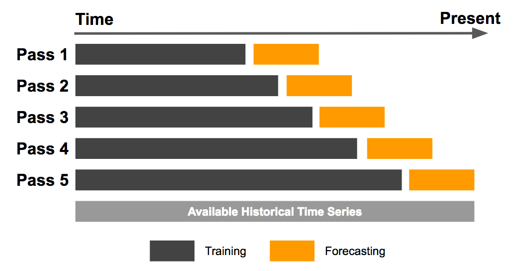

Takeaways from Kaggle’s “Jane Street Market Prediction” competition
Recently, I have spent my evenings participating in the Kaggle’s “Jane Street Market Prediction” competition.
To preserve the know-how acquired from the competition, I have written this blog post.
If you would like to learn more about the competition click here.
Contents
Anonymized data set know-how
Since we have been provided with an anonymized data set, it was difficult to perform EDA.
The specific data engineering methodology of Jane Street is one of their primary assets and that is why they have anonymized their data set. Hence, I didn’t spend much time on de-anonymization, considering it was unethical.
However, for those who are interested in how to start de-anonymizing a data set, here are example de-anonymization notebooks shared by Gregory Calvez during the competition:
- https://www.kaggle.com/gregorycalvez/de-anonymization-buy-sell-net-gross
- https://www.kaggle.com/gregorycalvez/de-anonymization-price-quantity-stocks
- https://www.kaggle.com/gregorycalvez/de-anonymization-time-aggregation-tags
- https://www.kaggle.com/gregorycalvez/de-anonymization-min-max-and-time
The author of the notebook explains his mindset throughout the notebook in clear and concise comments.
Cross-validation know-how
We have been given 2 years of time-series data.
To avoid information leakage, we couldn’t randomly split the data into cross-validation splits.
The main cross-validation methodology used in the competition was referred to as “Purged Group Time Series Split”. Here is how we split the data:

The intuition is that we iteratively expand the training data size over the entire history of a time series and repeatedly test against a forecasting window, without dropping older data points (Learn more about the method here).
Here is my implementation of the “Purged Group Time Series Split”:
import pandas as pd
import numpy as np
def custom_cv_split(df, n_splits=4, date_column_name):
date_splits = np.array_split(df[date_column_name].unique(), n_splits)
train_ixs = []
test_ixs = []
for split in date_splits[:-1]:
if len(train_ixs) > 0:
curr_tr_ix = train_ixs[-1].copy()
curr_tr_ix.extend(df[df[date_column_name].isin(split)].index.values.tolist())
else:
curr_tr_ix = df[df[date_column_name].isin(split)].index.values.tolist()
train_ixs.append(curr_tr_ix)
for split in date_splits[1:]:
curr_ts_ix = df[df[date_column_name].isin(split)].index.values.tolist()
test_ixs.append(curr_ts_ix)
for i in train_ixs:
print("Training size: ", len(i), i[:10], i[-10:])
print()
for i in test_ixs:
print("Test size: ", len(i), i[:10], i[-10:])
return list(zip(train_ixs, test_ixs))If you face any bugs, have fun debugging it. I am sure it will help you understand the code!
Neural network optimization with Keras-tuner
Keras-tuner package has made it easy and intuitive to tune neural network parameters! Their documentation is also quite simple.
However, when it comes to using custom cross-validation sets, we have to apply a small trick by creating and modifying the keras-tuner “kt.engine.tuner.Tuner” class:
class CVTuner(kt.engine.tuner.Tuner):
def run_trial(self, trial, X, y, splits, batch_size=32, epochs=1,callbacks=None):
val_losses = []
for train_indices, test_indices in splits:
X_train, X_test = [x[train_indices] for x in X], [x[test_indices] for x in X]
y_train, y_test = [a[train_indices] for a in y], [a[test_indices] for a in y]
if len(X_train) < 2:
X_train = X_train[0]
X_test = X_test[0]
if len(y_train) < 2:
y_train = y_train[0]
y_test = y_test[0]
model = self.hypermodel.build(trial.hyperparameters)
hist = model.fit(X_train,y_train,
validation_data=(X_test,y_test),
epochs=epochs,
batch_size=batch_size,
callbacks=callbacks)
val_losses.append(np.max([hist.history[k]) for k in hist.history]) #change this based on your metric, we use auc --> so we want to get maximum value
val_losses = np.asarray(val_losses)
self.oracle.update_trial(trial.trial_id, {k:np.mean(val_losses[:,i]) for i,k in enumerate(hist.history.keys())})
self.save_model(trial.trial_id, model)Make sure you understand each line, so that you can customize it later for your own use case.
As a next step, we can directly use our “CVTuner” class as:
tuner = CVTuner(
hypermodel=model_fn, #keras model definition function
oracle=kt.oracles.BayesianOptimization(
objective= kt.Objective('val_loss', direction='min'),
num_initial_points=4,
max_trials=10,
seed=SEED
)
)
tuner.search(
(X,),
(X,y),
splits=splits, #here we pass the CV folds
batch_size=4096,
epochs=100,
callbacks=[EarlyStopping('val_loss',patience=5)]
)And that is it!
With the help of the keras-tuner package, we can setup the hyperparameter tuning in only a few lines of code.
Keras fast inference know-how
To simulate a real-world High-Frequency-Trading (HFT) prediction scenario, the organizers have set a time limit of ~60 predictions/second.
This made heavy feature engineering almost impossible, leading us to focus on methods that improve the prediction/second rate.
One of the interesting methods was to make our Keras NN model inference time ~3-4 times faster by making our model “LiteModel”:
class LiteModel:
@classmethod
def from_file(cls, model_path):
return LiteModel(tf.lite.Interpreter(model_path=model_path))
@classmethod
def from_keras_model(cls, kmodel):
converter = tf.lite.TFLiteConverter.from_keras_model(kmodel)
tflite_model = converter.convert()
return LiteModel(tf.lite.Interpreter(model_content=tflite_model))
def __init__(self, interpreter):
self.interpreter = interpreter
self.interpreter.allocate_tensors()
input_det = self.interpreter.get_input_details()[0]
output_det = self.interpreter.get_output_details()[0]
self.input_index = input_det["index"]
self.output_index = output_det["index"]
self.input_shape = input_det["shape"]
self.output_shape = output_det["shape"]
self.input_dtype = input_det["dtype"]
self.output_dtype = output_det["dtype"]
def predict(self, inp):
inp = inp.astype(self.input_dtype)
count = inp.shape[0]
out = np.zeros((count, self.output_shape[1]), dtype=self.output_dtype)
for i in range(count):
self.interpreter.set_tensor(self.input_index, inp[i:i+1])
self.interpreter.invoke()
out[i] = self.interpreter.get_tensor(self.output_index)[0]
return out
def predict_single(self, inp):
""" Like predict(), but only for a single record. The input data can be a Python list. """
inp = np.array([inp], dtype=self.input_dtype)
self.interpreter.set_tensor(self.input_index, inp)
self.interpreter.invoke()
out = self.interpreter.get_tensor(self.output_index)
return out[0]And finally, transform our model using the “TFLite” class:
model = LiteModel.from_keras_model(model)
model.predict(X_test)By doing this simple step, we have been able to drastically increase our predictions/second. Approximately 3-4 times!!!
However, one thing to note here is that since “TFLite” is an optimization method, there might be slight differences in the performance of the transformed model.
Despite this withdrawal, according to my experiments, I did not see a huge drop in the performance, so I used “TFLite” transformation without worrying too much.
Conclusion
To conclude, I have learned many valuable techniques by participating in the “Jane Street Market Prediction” competition.
The winners of the competition will be announced after 6 months. Until then, throughout these 6 months, our models are tested against real-time market data.
Ultimately, no matter if you win a medal or not, participating in Kaggle competitions is surely the best way to acquire up-to-date State Of The Art (SOTA) ML modeling knowledge!
Therefore, for anyone who is interested in Data Science, Machine Learning or AI in general, I highly encourage you to try to Kaggle.
Thank you for reading and happy Kaggling!